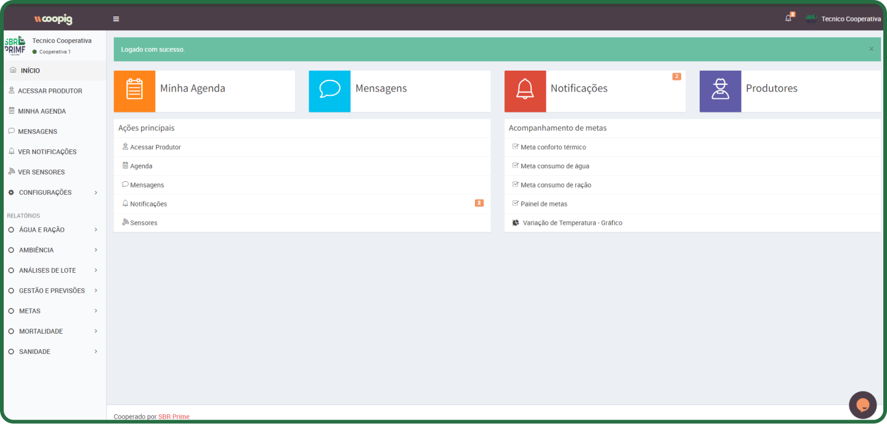
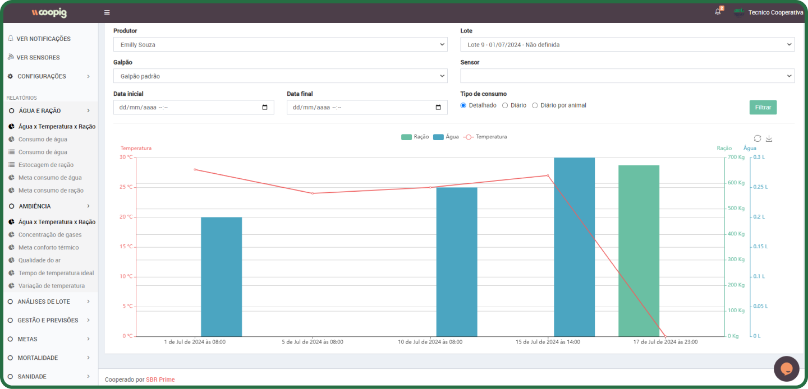
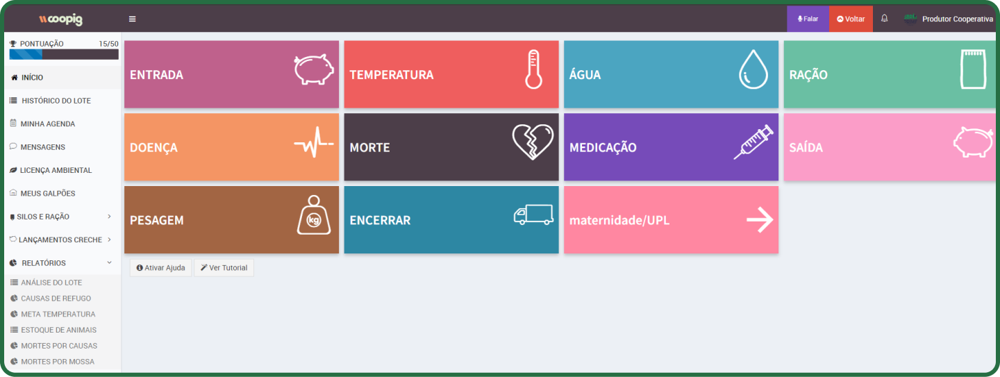
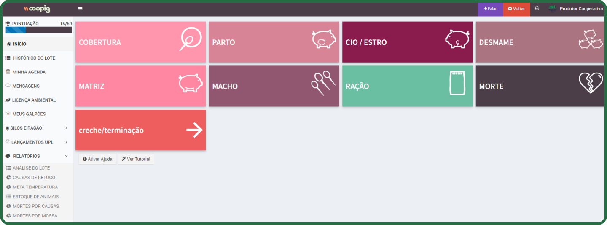
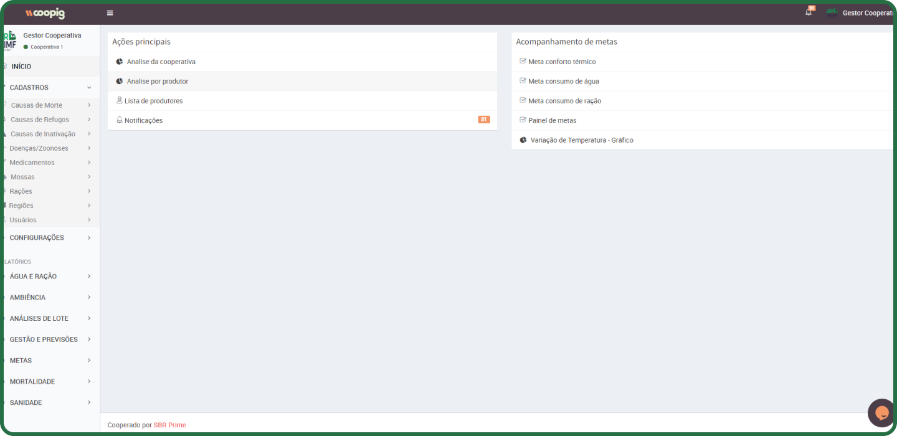

Painel Do Técnico
A página inicial do perfil do técnico é um hub centralizado que oferece ferramentas e informações essenciais para o trabalho diário. Nela, o técnico pode agendar visitas aos produtores, comunicar-se para esclarecer dúvidas, monitorar metas e acessar os perfis individuais dos produtores. Essa abordagem integrada otimiza a gestão e facilita a tomada de decisões informadas como: Agendamento de visitas aos produtores, conversas para sanar dúvidas, acompanhamento de metas, acesso aos perfis dos produtores.
Em resumo, essa página centraliza informações e ferramentas essenciais para o trabalho do técnico, tornando a gestão mais eficiente e eficaz.
Painel De Relatório Do Técnico
Os relatórios de produção são fundamentais para o sucesso das empresas no mercado global de manufatura. Com um plano de produção robusto e atenção aos detalhes, as organizações podem prosperar. Esses relatórios não são apenas dados; eles capacitam os tomadores de decisão, podendo, otimizar processos, identificar tendências e problemas, monitorar o desempenho, coordenar internamente.
Painel Do Produtor
A tela do menu do produtor é um painel centralizado que reúne diversas funcionalidades para o manejo da produção suína, desde a fase de creche até a terminação dos animais. A tela se destaca por oferecer uma visão completa e organizada das informações do lote, permitindo ao produtor acompanhar o desenvolvimento dos animais e tomar decisões mais assertivas. As funcionalidades incluem Temperatura Água Ração Doença Morte Medicações Silos e Ração e Pesagem.
Painel Do Produtor Maternidade
Essa interface é intuitiva e organizada em módulos, facilitando a navegação e o acesso às informações relevantes para o produtor. Os principais módulos incluem Módulos de produção, Gerenciamento de animais, Alimentação, Saúde animal e Gerenciamento.
Painel Do Gestor
A interface apresentada oferece ao gestor da cooperativa uma visão geral das principais funcionalidades do sistema, com foco em análise de dados, acompanhamento de metas e gestão de cadastros. Através dela, o gestor pode monitorar diversos aspectos da cooperativa, desde o desempenho individual dos produtores até o consumo de recursos como água e ração. As principais funcionalidades incluem análise por produtor, lista de produtores, causas de mortalidade, refugos e hama, medicamentos, rações e regiões, meta conforto térmico, consumo de água e ração, painel de metas e variação de temperatura (gráfico).
Painel De Relatórios Do Gestor

A tela de relatórios e metas apresentada oferece ao gestor da cooperativa uma visão detalhada do desempenho da produção, permitindo acompanhar o progresso em relação às metas estabelecidas e identificar áreas para melhoria. Através desta interface, o gestor pode gerar relatórios personalizados e analisar diversos indicadores de desempenho, como peso médio dos animais, taxa de mortalidade e eficiência alimentar. As principais funcionalidades incluem análise de lote, comparação de produtores, indicadores de desempenho, pesagens, refugos e mortalidade.